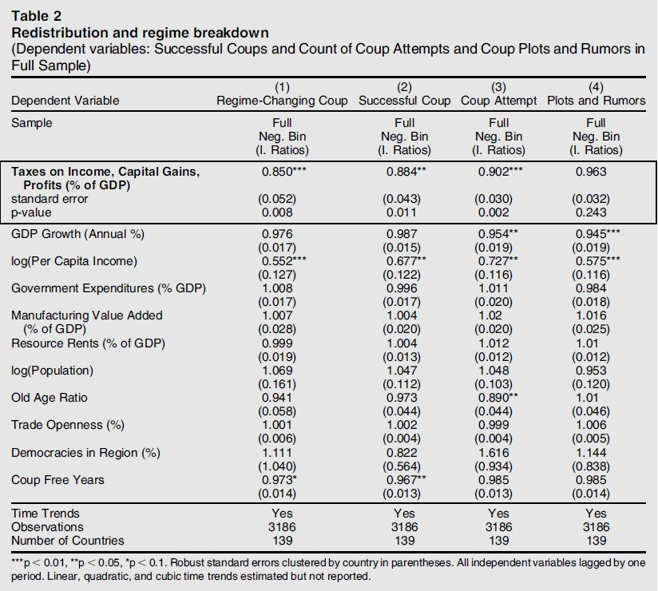
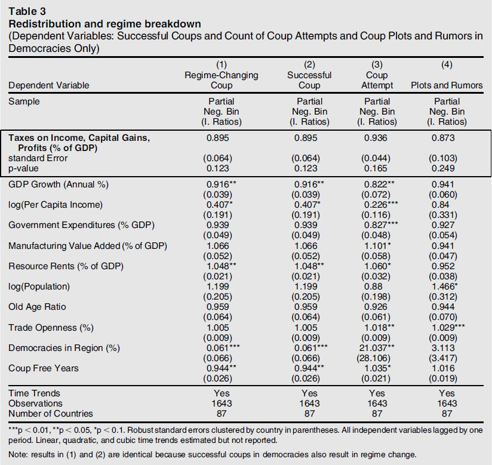
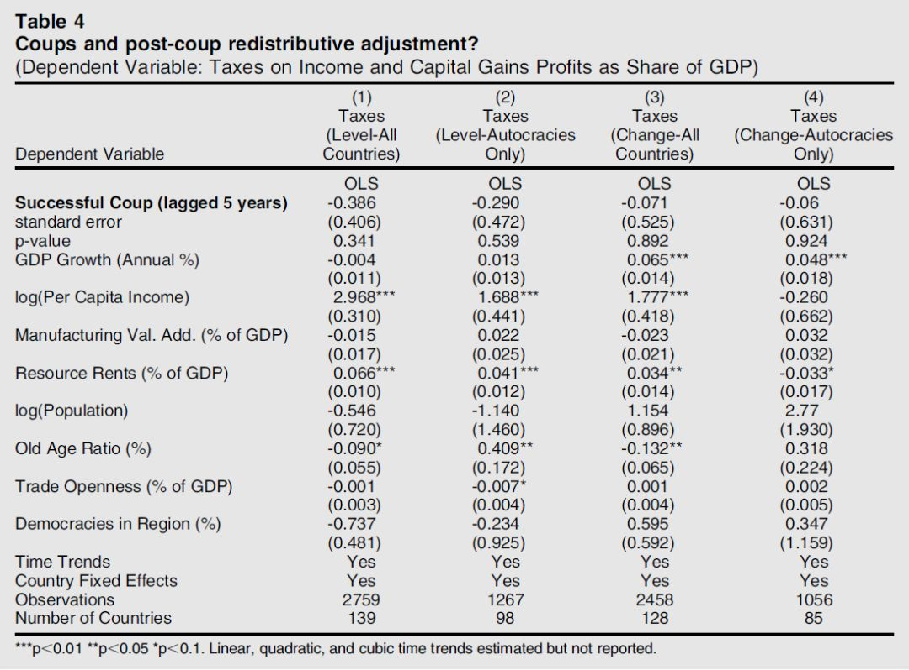

收录于合集
文献来源： Dan Slater,et al. “Economic Origins of Democratic Breakdown? The Redistributive Model and the Postcolonial State,” Perspectives on Politics , Vol.12,No.2(June 2014), pp.353–374.
作者简介：
Dan Slater，现任密歇根大学政治学系教授，研究领域包括比较政治、国际关系和世界政治等，个人介绍见https://lsa.umich.edu/polisci/people/faculty/dnsltr.html。
Benjamin Smith，佛罗里达大学政治学系副教授，研究方向包括政治经济学、冲突政治和政体变迁等，个人介绍见https://www.benjaminbsmith.net/。
Gautam Nair，耶鲁大学政治学系博士候选人，研究方向包括政治经济学、南亚政治、族群政治等，个人介绍见https://gautamnair.org/。
导致当代世界民主崩溃的原因是什么？经典的再分配理论能否解释后殖民国家的民主崩溃？ 本文认为，再分配理论对国家权力的假设值得商榷。 文章作者通过对139个国家1972年至2007年的横截面时间序列数据的相关分析和对菲律宾、印度尼西亚的案例研究指出， 当代民主崩溃源于政治上的弱国家，而非经济上的阶级冲突。
正如阿西莫格鲁和罗宾逊所言，民主所受的威胁源于自身的再分配属性。这建立在如下预期之上： 赋予更多穷人选举权将使精英阶层面临更高的再分配风险，这将增加民主崩溃的可能性。 但是，再分配模型应用于后殖民环境的主要局限在于对国家权力和国家与社会关系的两个可疑假设。 第一，军队是财富精英的代理人，而不是独立自主的主体。 第二，国家的行政机构有必要的能力根据选民要求对富人征税。 然而， 在后殖民国家，现实中存在的往往是相对无能的官僚制和相对自主的军队的组合。
作者认为，像再分配模型这样占据主流地位的理论需要新的理论，而不仅仅是新的经验来反驳。作者援引了Soifer的观点： 只有在国家能力相当大的条件下，不平等才能对政体结果产生影响，如果缺乏这种能力，无论是精英还是大众都没有理由期待政权更迭意味着再分配变革。 从 国家中心 的视角来看， 再分配模型一是低估了军队的自主性，二是高估了官僚的能力。 在某种程度上后殖民国家的军队必须被视为在意识形态上和行动上独立的政治行动者，军官不能被假定与财富精英共享利益；国家往往缺乏行政能力，不能假定它们将有效追求再分配政策。因此，作者将利用定量和定性的证据来挑战主流的民主崩溃的经济解释，而强调 有能力的国家是民主生存的政治基石。
接下来作者利用139个国家1972年至2007年间的时间序列截面数据来检验再分配理论和本文以国家能力为中心的假设。 为了理解再分配潜在的政变催化效应，作者将衡量对个人收入和资本收益征税的影响。 这种方式在概念上同时涵盖精英再分配和国家能力两个维度。
定量研究的 第一部分检验政权在汲取富人财富时是否更容易受到军事干预，以及民主国家在向富人课以重税时是否更容易遭受这种命运。 税收是自变量，政变是因变量，同时作者对政变类型作了区分。数据表明， 对收入、利润和资本收益征税——这实际上代表了财富再分配和国家能力——与反对民主政权的军事政变之间存在着负相关关系。 首先， 即使源自富人税收在国家经济中所占的比例越来越大，但富人似乎并没有成功地鼓动军事干预。 第二， 有能力向富人征税的国家和有意愿向富人征税的政府，似乎也有能力把军官留在军营里。 因此， 对富人增税并不预示着民主崩溃的可能性更大。 恰恰相反，这表明政府是一个非常能干的政府，能够将政权从崩溃的风险中隔离出来。简而言之， 更有能力的国家往往不太容易发生政变。
 
第二部分将讨论军事政变之后是否会减少再分配。 政变是预测随后税率的自变量，作者纳入了一个滞后五年的指标。这是因为在政变后的头几年，不稳定可能会掩盖一个政权的再分配意图。五年之后，一个代表上层阶级的军事政权的再分配意图应该更加清晰。研究结果表明， 政变之后的民主崩溃并不会导致系统性的再分配的减少，政变对国家汲取富裕公民的税收没有显著影响。

接下来，作者利用东南亚的菲律宾和印度尼西亚两个案例来说明再分配和政体之间的关系。 菲律宾的情况表明，即使是在高度稳定和不平等的民主国家也并不必然面临严峻的再分配威胁，低水平的再分配反而并不会使民主免于崩溃。 印尼的情况表明，不同于传统的观点认为左翼政府更倾向于实施再分配，相反，一个坚定的右翼独裁政权甚至能比先前的左翼政府征收更高的再分配税，因为在后殖民国家，从富人身上汲取财富与其说是意识形态或政体类型所发挥的作用，不如说是得益于国家能力。
经济危机增加了民主崩溃的可能，但潜在的政治脆弱性可能引发并加剧经济衰退，进而破坏正在危机中挣扎的政治体制。 因此， 政治科学家应进一步研究经济秩序的政治基础，揭示当代世界民主崩溃的政治根源。 在那些从殖民统治中实现民族解放的国家中， 军人干政与无效治理对国家发展造成了长期的负面影响。 如果一个国家希望从专制走向民主并得以巩固的话，一项必然的任务就是建设一个有能力的国家。总而言之，一 个脆弱的民主政府要想生存下去，最好的办法并不是对地方的私人财富袖手旁观，而是发展一种代表国家民众的制度能力，来争取自己在这些财富中应占的公平份额。
编译：何家丞
审读：释启鹏
编辑：吴温泉


政文观止
微信扫一扫赞赏作者 __赞赏
已喜欢，对作者说句悄悄话
取消 __
发送给作者
发送
最多40字，当前共字
上一页 1/3 下一页
长按二维码向我转账
受苹果公司新规定影响，微信 iOS 版的赞赏功能被关闭，可通过二维码转账支持公众号。